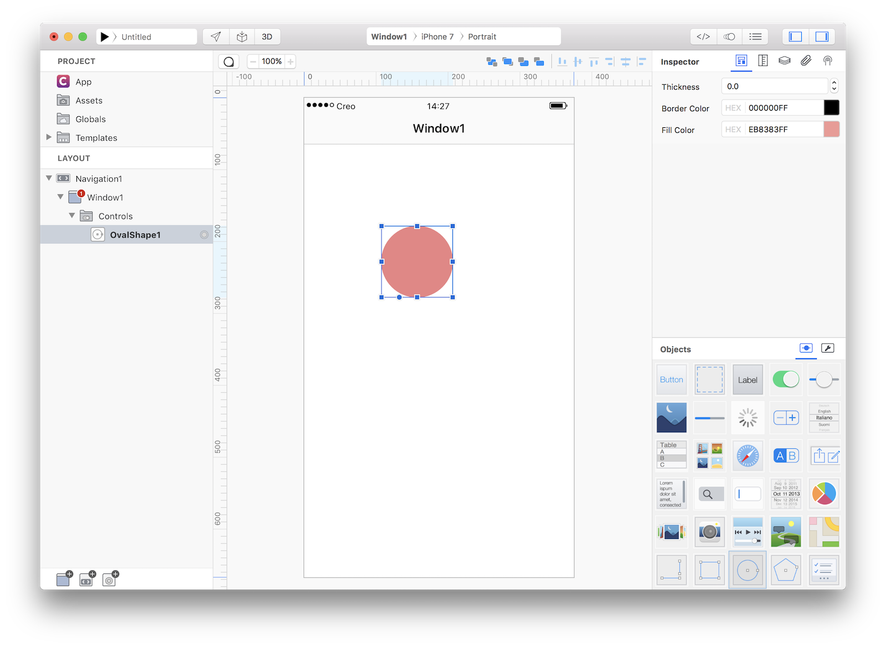
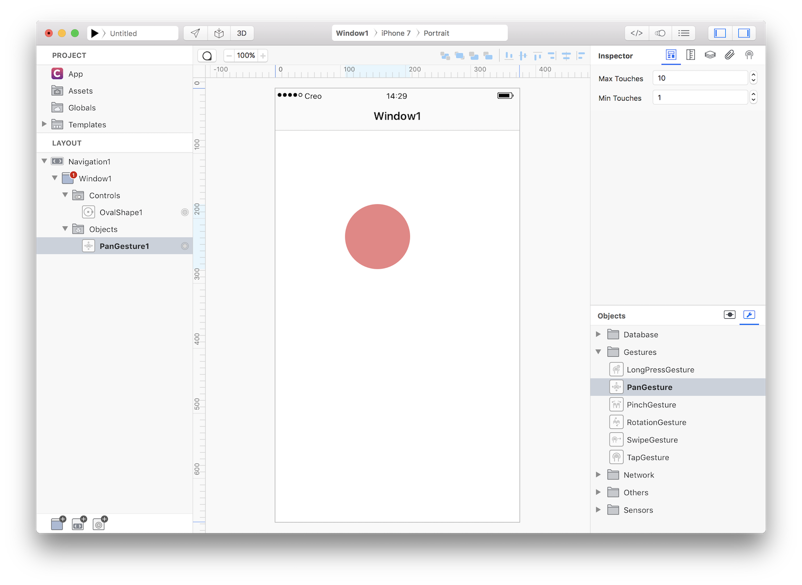
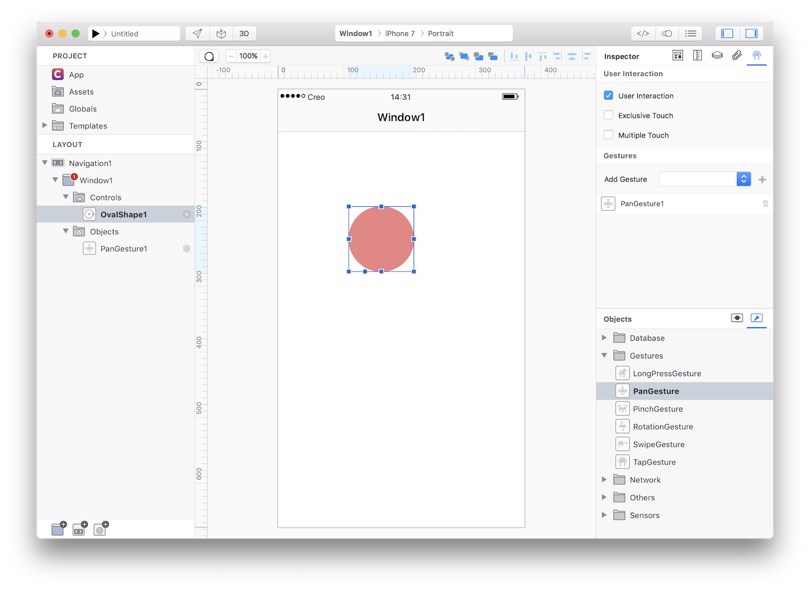
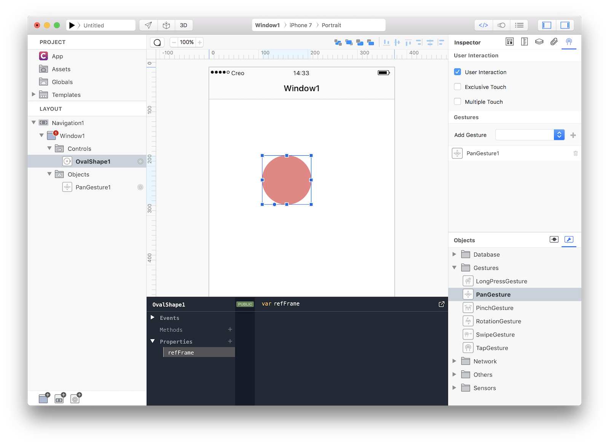
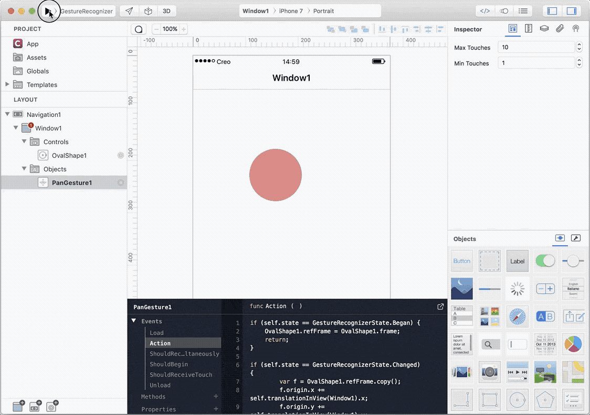

Gesture Recognizer
Concepts
- A gesture-recognizer object decouples the logic for recognizing a sequence of touches (or other input) and acting on that recognition. When one of these objects recognizes a common gesture or, in some cases, a change in the gesture, it sends an action message to each designated target object.
Classes
Assets
- None
1 Create a new empty Creo project and drop a OvalShape object into the Design Board. Then change its thickness to 0.0 and set a fill color you like:

2 Drop a PanGesture object from the Gestures objects into Window1:

3 Now select your OvalShape1 object and go to the Gesture inspector panel. Check the "User Interaction" flag and connect the gesture PanGesture1 to the OvalShape1 object (pressing the + button):

4 We now have PanGesture1 bound to the OvalShape1 object, so lets configure the gesture now. We need a property to store a temporary value so the first thing to do is to add a public refFrame property to the OvalShape1 object. Just select it, open the Code Editor and add that property:

5 Now select the PanGesture1 object and in its Action even write the following code:
// at the began of the gesture, save the original frame into an object property
if (self.state == GestureRecognizerState.Began) {
OvalShape1.refFrame = OvalShape1.frame.copy();
return;
}
// each time the gesture state changes, copy the new frame to a temporary variable
// (remember that in Gravity everything is an object but in this case we need to
// explicitly make a copy), then translate absolute coordinates to coordinates
// local to the Window1 and finally apply the changes to the OvalShape1 frame (to
// move the original object)
if (self.state == GestureRecognizerState.Changed) {
var frame = OvalShape1.refFrame.copy();
var t = self.translationInView(Window1)
frame.x += t.x;
frame.y += t.y;
OvalShape1.frame = frame;
}
6 That's all you need in order to have a fully functional Assets browser app. Press RUN and enjoy the app! 
You can now send the app to CreoPlayer or build it and then submit to the App Store.
Project